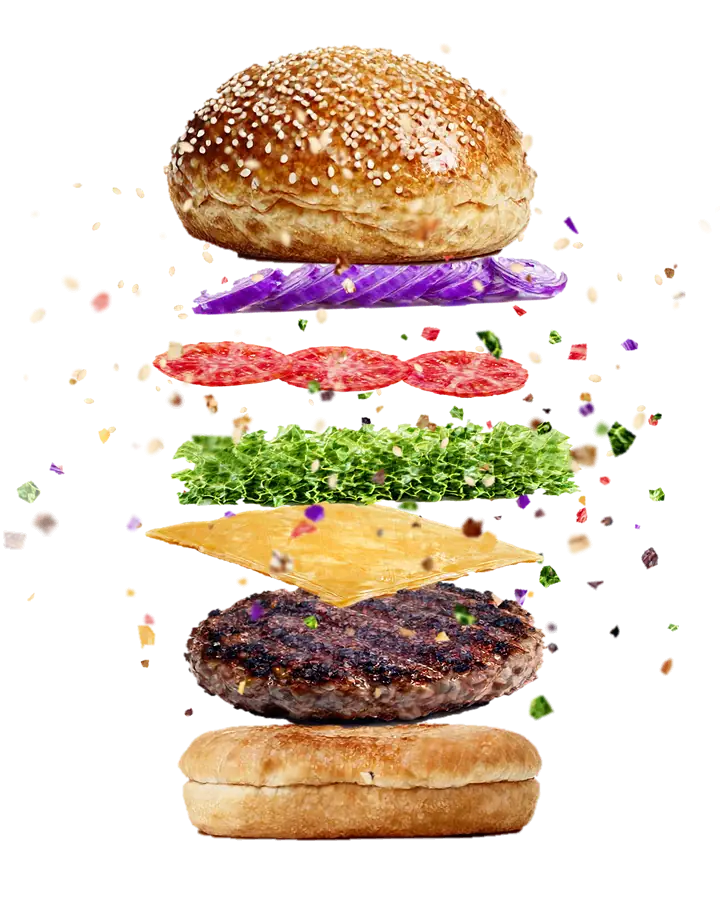

合在一起，才完整。
BEYOND THE BURGER
漢堡只是起點。同一種展示方式，可以用來介紹設備結構、材質堆疊、模組設計與組裝順序。
讓外殼、核心、接口各自展開，建立產品的整體概念。
一次轉一個零件，介紹材質、用途與設計細節，讓業務有具體的說明起點。
用組回完整產品收尾，讓客戶記得的不只是零件，而是它們如何一起運作。
此展示需要 JavaScript 控制 3D 拆解動畫，請開啟 JavaScript 後重新載入。